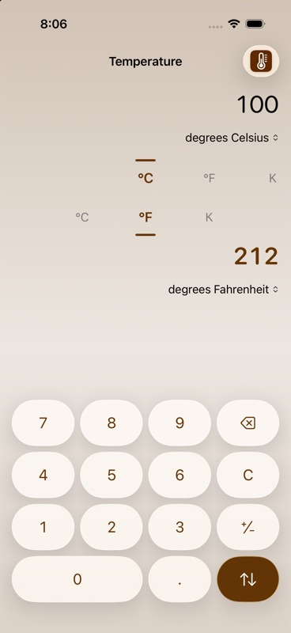
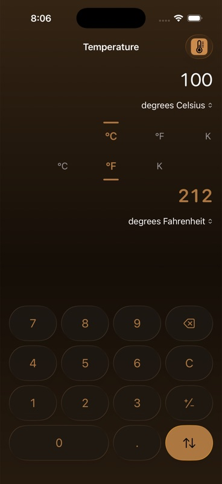
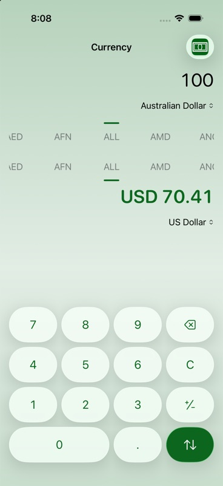
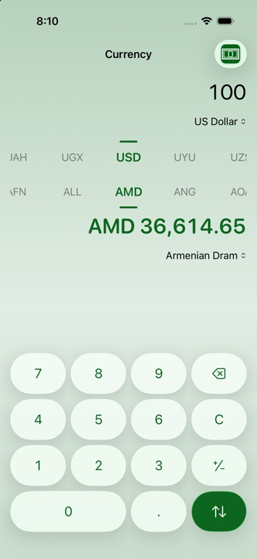
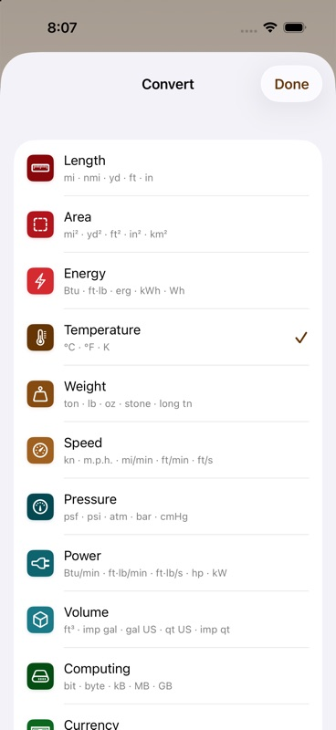

Conversion
It converts — simple!
Any unit, any currency.
Metres to feet, ounces to grams, Celsius to Fahrenheit, pounds to euros at today's rate. Ninety-five units across twelve categories, and 166 currencies.



units across 12 categories
currencies at today's rates
languages, translated and tested
fully accessible, every screen and text size
Correctness
The answers are right
Every pair of units is checked against a known-correct answer — around seven hundred conversions — before a release goes out.
Imperial and metric, both properly
Pints, quarts and gallons in both the imperial and US sizes, kept exactly in step with one another — a quart really is a quarter of a gallon, which is not true of every converter.
Both kinds of kilobyte
Storage comes in two flavours — the 1000-byte kilobyte and the 1024-byte kind. Conversion offers both, each correctly labelled, so whichever you were expecting is the one you get.
Kitchen measures that add up
Cups, tablespoons, teaspoons and fluid ounces, all in step — so a cup really is sixteen tablespoons, and the numbers agree with your measuring jug.
Sensible decimal places
Answers come out at a length you can actually read — no 37.7777777778, and no tiny result rounded away to nothing.
Convert back and land where you started
A mile is 1609.344 metres exactly, not roughly. Go one way and back again and you get your original number — including for the awkward ones like temperature, which has an offset rather than a ratio.
The unit you asked for
Ask for miles and you get miles, in every one of the 35 languages — never quietly converted into whatever the local convention happens to prefer.
Currency
Live rates, and honesty when they are not
166 currencies at the day's published rates. The most recent rates are stored on the phone, so conversion still works with no signal — and Conversion tells you when the rates it is using are yesterday's rather than presenting them as current.
A wrong number is worse than no number. With no rates at all it says so rather than guessing, and it never presents an out-of-date rate as though it were today's.
- Opens on your own currency, not the alphabetically first one
- Each currency shown the way it is actually written — no cents on the yen
- Tiny amounts never collapse to "$0.00" and look broken
- If the rates service is ever wound up, Conversion will know before you do

Design
Two dials and a keypad
Two dials with the numbers between them. Each category carries its own colour, the dials give a small click as they turn, and the answer updates as you type.
Twelve categories, twelve colours, all of them legible
Each of the twelve categories has its own colour, warm through cool, so you can tell at a glance where you are — with a daytime version, a night-time one, and a stronger set for anyone who wants more contrast.
- Every colour checked for legibility, by day and by night
- A search that finds the unit you want when the list is a long one
- On an iPad turned sideways, the keypad moves beside the answer rather than under it
- Type on a keyboard if you have one attached, instead of tapping

Languages
35 languages, and the numerals to match
Eighteen of them were translated by people rather than by a machine. In the rest, the unit names, the numerals and the direction the writing runs all come from iOS itself, in the form your part of the world expects.
- English
- Français
- Deutsch
- Español
- Italiano
- Nederlands
- Português
- Dansk
- Svenska
- Norsk
- Suomi
- Polski
- Čeština
- Slovenčina
- Magyar
- Hrvatski
- Română
- Ελληνικά
- Русский
- Українська
- Türkçe
- עברית
- العربية
- हिन्दी
- ไทย
- Tiếng Việt
- Bahasa Indonesia
- Bahasa Melayu
- 日本語
- 한국어
- 简体中文
- 繁體中文
- Català
Numbers the way you write them
Whether your decimal point is a full stop or a comma, and whichever numerals you use, Conversion follows your region rather than ours. Getting that wrong in a converter is worse than useless.
Search that ignores your accents
Type "krona" and it finds the Icelandic Króna; type "fuss" and it finds Fuß. Accents and capitals do not matter, and "usd" or "dollar" will both get you there.
Tested in every one of them
Every language is checked before release to be sure nothing has been left untranslated and nothing has gone missing — because the one time a gap slipped through, it turned up as gibberish on a Japanese screen.
Accessibility
Legible at any text size
Hand-drawn dials and keys are the sort of control that usually ends up unreadable at large text sizes and silent to VoiceOver. Conversion is built and tested the other way.
Legible to the largest size
Set the text as large as iOS allows and Conversion rearranges itself to suit — the dials step aside, the numbers stay whole, and nothing ends up hidden behind the keypad. Checked at the very largest setting, on a real phone.
VoiceOver, Full Keyboard Access, Reduce Motion
Every control can be read aloud, described sensibly, and reached from a keyboard. And if you prefer things to sit still, turning on Reduce Motion stops the animation everywhere — not merely in most places.
Contrast held by tests, not by taste
Every colour, on every background, in daylight and at night, is checked against a real legibility standard rather than somebody's opinion. And we make sure those checks actually fail when a colour is weakened, because a test that never complains is no test at all.
Opens where you left off
Conversion remembers the category and the two units you were last using, so the screen you want is the screen you get. There is no account to create and no advertising anywhere in it.
Small, quick, and out of the way
It opens straight away, works out the answer as you type, and needs no internet at all unless you are converting money.
A converter has exactly one job. This one is made by people who use it every day.
— the design brief, in one sentenceAvailability
Ready to ship.
Conversion is complete and heading to the App Store. iPhone and iPad, iOS 26 and later.